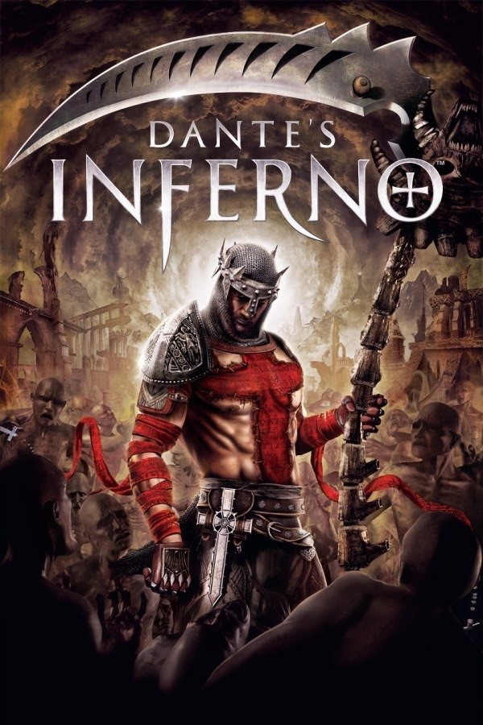

|  | |
| Tempo de jogo | 52s |
| Última Atividade | 05/08/2024 22:32:39 |
| Adicionado | 18/04/2024 19:39:28 |
| Modificado | 10/03/2025 0:53:05 |
| Status de Conclusão | Jogado |
| Biblioteca | Playnite |
| Fonte | |
| Plataforma | Super Nintendo |
| Data de Lançamento | 2010 |
| Pontuação da Comunidade | 76 |
| Avaliação da crítica | 73 |
| Pontuação do Usuário | |
| Gênero | Action-adventure hack and slash |
| Desenvolvedor | Visceral Games |
| Editor | Electronic Arts |
| Funções | Multiplayer Single Player |
| Links | Wikipedia |
| Tag | [EMT] Video Micro missing [EMT] Video missing |
Dante's Inferno is a 2010 action-adventure game developed by Visceral Games and published by Electronic Arts. The game was released for PlayStation 3, Xbox 360 and PlayStation Portable in February 2010. The PlayStation Portable version was developed by Artificial Mind and Movement.
The game's story is loosely based on Inferno, the first cantica of Dante Alighieri's Divine Comedy. It follows Dante, imagined as a Templar knight from The Crusades, who, guided by the spirit of the poet Virgil, must fight through the nine Circles of Hell to rescue his wife Beatrice from the clutches of Lucifer himself. In the game, players control Dante from a third-person perspective. His primary weapon is a scythe that can be used in a series of combination attacks and finishing moves. Many attack combinations and abilities can be unlocked in exchange for souls, an in-game currency that is collected upon defeating enemies. Some downloadable contents were subsequently released, including Dark Forest, a prequel story, and Trials of St. Lucia, which features St. Lucia as a playable character.
Before the game's release, Dante's Inferno underwent a prominent, elaborate, and at times controversial marketing campaign led by the game's publisher Electronic Arts. This included the release of a fake religious game called Mass: We Pray, a motion controller-based game supposedly allowing players to engage in an interactive prayer and church sermon.
Dante's Inferno received generally positive reviews by critics, with praise for the story, art direction, voice acting, sound design and depiction of Hell, though the gameplay received a mixed response due to repetitiveness in the latter half of the game and comparisons to the God of War series. It sold over one million copies worldwide and spawned a comic book miniseries and an animated movie, Dante's Inferno: An Animated Epic, which was released direct-to-DVD simultaneously with the game. A sequel based on Purgatorio and a mobile spin-off reportedly entered in development before being both cancelled.